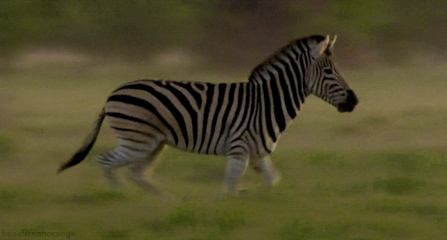

There is a new theory on why zebras have black and white stripes
There is a new theory on why zebras have black and white stripes
Why do zebras have their unique black and white stripes? It’s a question many scientists have been asking ever since British naturalist Charles Darwin laid out his views on evolution in the mid-19th century. And one of the most compelling arguments was that their stripes may have an evolutionary purpose that keeps the animals cool in the hot weather.But now, a group of researchers in Sweden say they have debunked this theory, saying that temperature has nothing to do with the existence of stripes. They believe that the zebra’s black and white fur works as an “optical protection” against insects – such as blood-sucking horseflies.
The logic behind the temperature theory is that during hot weather, the black stripes get warmer than the white areas, creating small vortexes when the hotter air above the dark fur meets the cooler air above the white fur which work as a fan to cool the body. To test this theory, the researchers filled metal barrels with water and covered them in different colours imitating the fur of species belonging to the equus (horse) family: black and white stripes, black, white, brown and grey. They then placed the barrels in the sun and later measured the temperature in each barrel. The black one was found to be the hottest while the white one emerged the coolest. The temperatures in the striped and grey barrels were similar but not significantly lower.